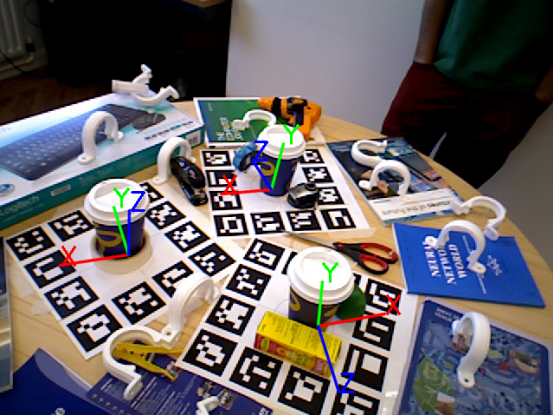
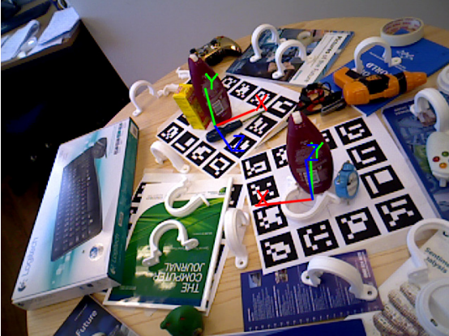
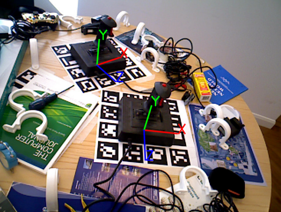

Multi-Object Pose Estimation Challenge | |||||||||
ICCV 2015 Workshop | |||||||||
|  |  |  | |||||||
Description | |||||||||
The Multi-Object Pose Estimation Challenge is part of the ICCV 2015 workshop on Recovering 6D Object Pose and aims in evaluating various methods on the problem of 6D pose estimation of multiple objects in a scene. | |||||||||
Dataset | |||||||||
The dataset can be downloaded from here. It contains 6 objects and about 1000 test images per object. Test images contain multiple instances of the object with partial occlusions. For training, the 3D models of the objects are provided. To refere to this dataset please cite the following paper: A. Tejani, D. Tang, R. Kouskouridas and T-K. Kim, “Latent-Class Hough Forests for 3D Object Detection and Pose Estimation”, European Conference on Computer Vision (ECCV), Zurich, Switzerland, 2014 [1] | |||||||||
Evaluation | |||||||||
To evaluate the results, the percentage of correctly estimated poses per object is calculated, along with false positives and false negatives. In order to assess whether a 6D pose solution is correct we use the following three metrics: | |||||||||
Participation | |||||||||
In order to participate, you should send us the results at icvl.challenge.2015@gmail.com of the 3D pose estimation of the objects in the test images. | |||||||||
References | |||||||||
1. A. Tejani, D. Tang, R. Kouskouridas and T-K. Kim, “Latent-Class Hough Forests for 3D Object Detection and Pose Estimation”, European Conference on Computer Vision (ECCV), Zurich, Switzerland, 2014 | |||||||||